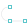

绘图 → 多段线
操作步骤：
步骤1：点击“绘图”按钮，再选择“多段线”工具。
步骤2：在屏幕上点击或拖动指定第一点，手指抬起时拾取的点为所指定的点。
步骤3调整第一点或创建下一点。如需绘制圆弧，点击关键字“弧”。
步骤4：重复步骤3，调整当前点创建。当选择的点数超过两个点时，关键字会增加“闭合”，可用来闭合多段线并结束当前多段线命令。
步骤5：如需取消上一步操作，可点击“撤销”。
步骤6：调整当前点或确认输入。
小技巧：多段线命令在指定下一点时，当夹角接近垂直时触发贴靠效果，可方便画出直角。